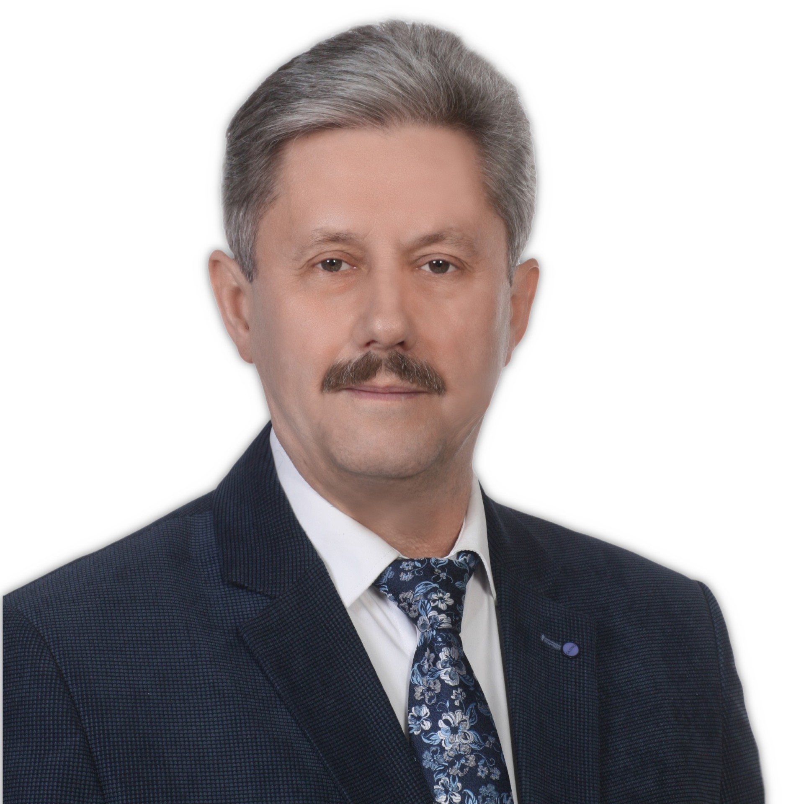

Informacje o Związku
Stowarzyszenie Związek Miast i Gmin Regionu Świętokrzyskiego wpisane przez Sąd Rejonowy w Kielcach do rejestru stowarzyszeń pod numerem KRS 0000003041 działalność prowadzi od 2001 roku.
Stowarzyszenie zrzesza 100 gmin województwa świętokrzyskiego. Jest dobrowolnym Stowarzyszeniem, zawartym dla wspierania inicjatyw i idei rozwoju społeczności lokalnych oraz ochrony wspólnych interesów jego członków. Współdziała na rzecz pogłębiania współpracy między miastami i gminami regionu świętokrzyskiego. Zadania swoje realizuje poprzez koordynację działań samorządów gmin i województwa, zajmowanie stanowisk w sprawach publicznych oraz współdziałanie z korporacjami samorządowymi, administracją rządową i jednostkami wojewódzkimi w sprawach istotnych dla miast i gmin. Poprzez organizację szkoleń przedstawicieli samorządowych i wyjazdów studyjnych.
Organami Stowarzyszenia są: walne zebranie członków, zarząd i komisja rewizyjna. Kadencja władz wybieralnych Stowarzyszenia trwa 5 lat i odpowiada kadencji rad gmin. Majątek Stowarzyszenia stanowią roczne składki członkowskie gmin.
100
Gmin województwa świętokrzyskiego
2001
Rok założenia
4
Miasta członkowskie
40/tyg.
Godzin pracy biura
14
Członków zarządu
3
Członków komisji rewizyjnej
Zarząd Stowarzyszenia
Robert Jaworski
Prezes
Burmistrz Gminy i Miasta Chęciny
Sławomir Kopacz
Wiceprezes
Wójt Gminy Bieliny

Krzysztof Gajewski
Wiceprezes
Wójt Gminy Waśniów
Grzegorz Dziubek
Wiceprezes
Burmistrz Gminy Włoszczowa
Mariusz Walachnia
Sekretarz
Wójt Gminy Bliżyn
Wacław Szarek
Skarbnik
Burmistrz Miasta i Gminy Sędziszów

Grzegorz Gajewski
Członek Zarządu
Burmistrz Miasta i Gminy Opatów

Sławomir Kowalczyk
Członek Zarządu
Burmistrz Miasta i Gminy Opatowiec

Leszek Kopeć
Członek Zarządu
Burmistrz Miasta i Gminy Staszów

Krzysztof Obratański
Członek Zarządu
Burmistrz Miasta i Gminy Końskie

Stanisław Porada
Członek Zarządu
Burmistrz Miasta i Gminy Działoszyce
Mirosław Seweryn
Członek Zarządu
Wójt Gminy Mirzec

Marek Łukaszek
Członek Zarządu
Wójt Gminy Dwikozy

Paweł Zagaja
Członek Zarządu
Burmistrz Miasta i Gminy Nowy Korczyn
Komisja rewizyjna
Wojciech Ślefarski
Przewodniczący
Wójt Gminy Zagnańsk
Tadeusz Soboń
Członek komisji
Wójt Gminy Oksa

Hubert Żądło
Członek komisji
Gminy Bałtów
Aktualności
Komunikaty, relacje z posiedzeń i bieżące informacje z życia Związku
Miasta członkowskie
Miasta i gminy członkowskie
Gminy członkowskie
Statut
Nawiązując do bogatych, wielowiekowych tradycji historycznych w zakresie współpracy gospodarczej i kulturalnej regionu świętokrzyskiego.
Biorąc pod uwagę, że dla rozwoju gospodarczego i społecznego, zarówno w skali ogólnopolskiej jak i ogólnoeuropejskiej, konieczne jest utrzymywanie i pielęgnowanie ściślejszej więzi współpracy między miastami i gminami świętokrzyskimi.
W przekonaniu, że pogłębianie współpracy między miastami i gminami regionu świętokrzyskiego może wnieść znaczący wkład dla rozwoju Polski i Europy, zdecydowaliśmy się założyć Stowarzyszenie "Związek Miast i Gmin Regionu Świętokrzyskiego".
Uchwała Nr 3/2022 Walnego Zebrania Członków Stowarzyszenia Związek Miast i Gmin Regionu Świętokrzyskiego z dnia 22 lutego 2022r. w sprawie zmiany Statutu Stowarzyszenia.
Statut Stowarzyszenia pod nazwą Związek Miast i Gmin Regionu Świętokrzyskiego
Statut stowarzyszeniaUchwały
Rejestr uchwał Walnego Zebrania Członków oraz Zarządu Stowarzyszenia
Sprawozdania
Sprawozdania merytoryczne i finansowe z działalności organów Związku
Kontakt
Email dyrektora biura:
Pani Aneta Sławek
biuro@zmigrs.kielce.com.pl
Numer do Prezesa Stowarzyszenia:
Pan Robert Jaworski
(+48) 41 315 10 06
Numer do Biura Stowarzyszenia:
Pani Aneta Sławek
(+48) 41 342 16 50
Siedziba biura
pokój nr 2 (parter) - budynek "B"
Świętokrzyski Urząd
Wojewódzki w Kielcach
Godziny urzędowania:
od poniedziałku do piątku w godz. 7:30-15:30
Strona WWW:
www.zmigrs.kielce.com.pl
Dane rejestrowe stowarzyszenia:
KRS: 0000003041 • NIP: 9591474087 • REGON: 292394840
e-Doręczenia: AE:PL-67891-45230-URSKL-21
Skrytka ePUAP: /ZMiGRS/skrytka
Napisz do nas:
Lokalizacja biura
Biuletyn Informacji Publicznej
Związek Miast i Gmin Regionu Świętokrzyskiego
Strona główna urzędowego publikatora teleinformatycznego – Biuletynu Informacji Publicznej Stowarzyszenia Związek Miast i Gmin Regionu Świętokrzyskiego, utworzona zgodnie z przepisami Ustawy z dnia 6 września 2001 r. o dostępie do informacji publicznej (Dz. U. z 2022 r. poz. 902).
1. Dane identyfikacyjne podmiotu
- Nazwa: Stowarzyszenie Związek Miast i Gmin Regionu Świętokrzyskiego
- Siedziba: al. IX Wieków Kielc 3, 25-516 Kielce (Świętokrzyski Urząd Wojewódzki, bud. B, pok. 2)
- KRS: 0000003041 (Sąd Rejonowy w Kielcach, X Wydział Gospodarczy KRS)
- NIP: 9591474087
- REGON: 292394840
- Adres do e-Doręczeń: AE:PL-67891-45230-URSKL-21
- Skrytka ePUAP: /ZMiGRS/skrytka
- E-mail oficjalny: biuro@zmigrs.kielce.com.pl
- Telefon do biura: (+48) 41 342 16 50
2. Organy Stowarzyszenia i Władze
Organami statutowymi Związku Miast i Gmin Regionu Świętokrzyskiego są:
- Walne Zebranie Członków – najwyższy organ uchwałodawczy reprezentujący 100 gmin województwa świętokrzyskiego.
- Zarząd Stowarzyszenia – 14-osobowy organ wykonawczy pod przewodnictwem Prezesa Roberta Jaworskiego.
- Komisja Rewizyjna – 3-osobowy organ kontroli wewnętrznej pod przewodnictwem Wojciecha Ślefarskiego.
3. Rejestry, Akty Prawne i Dokumenty
Dostęp do oficjalnych dokumentów regulujących funkcjonowanie związku:
4. Dostęp do Informacji Publicznej na Wniosek
Informacje publiczne nieudostępnione w Biuletynie Informacji Publicznej są udostępniane na wniosek zainteresowanego, zgodnie z art. 10 Ustawy o dostępie do informacji publicznej.
- Termin udostępnienia: bez zbędnej zwłoki, nie później niż w terminie 14 dni od dnia złożenia wniosku.
- Sposób złożenia: pisemnie na adres biura, drogą elektroniczną (e-mail: biuro@zmigrs.kielce.com.pl), przez e-Doręczenia lub skrytkę ePUAP.
- Opłaty: dostęp do informacji publicznej jest bezpłatny (chyba że podmiot ponosi dodatkowe koszty związane z przekształceniem formy lub nośnika).
Deklaracja Dostępności Cyfrowej
Związek Miast i Gmin Regionu Świętokrzyskiego zobowiązuje się zapewnić dostępność swojej strony internetowej zgodnie z przepisami Ustawy z dnia 4 kwietnia 2019 r. o dostępności cyfrowej stron internetowych i aplikacji mobilnych podmiotów publicznych (Dz. U. z 2023 r. poz. 1440).
Niniejsze oświadczenie w sprawie dostępności ma zastosowanie do serwisu internetowego ZMiGRS.
- Data publikacji strony internetowej: 2022-01-15
- Data ostatniej istotnej aktualizacji: 2026-03-10
- Data sporządzenia Deklaracji: 2024-03-20
- Data ostatniego przeglądu Deklaracji: 2026-09-24
Stan dostępności cyfrowej
Strona internetowa jest częściowo zgodna z ustawą z dnia 4 kwietnia 2019 r. o dostępności cyfrowej stron internetowych i aplikacji mobilnych podmiotów publicznych z powodu poniższych niezgodności lub wyłączeń.
Niedostępne elementy i wyłączenia
- Część archiwalnych dokumentów do pobrania w formacie PDF i skanów (pochodzących z lat 2001–2021) nie posiada pełnej struktury tekstowej OCR – są one sukcesywnie konwertowane i uzupełniane.
- Niektóre archiwalne galerie zdjęć w artykułach mogą nie posiadać szczegółowych opisów alternatywnych (atrybutów alt).
- Część materiałów zewnętrznych lub map interaktywnych dostarczanych przez podmioty trzecie może nie być w pełni obsługiwana za pomocą wyłącznie klawiatury.
Przygotowanie deklaracji dostępności
Deklarację sporządzono na podstawie samooceny przeprowadzonej przez podmiot publiczny oraz audytu wewnętrznego przeprowadzonego z użyciem narzędzi walidujących (WAVE, Axe) oraz czytnika ekranu NVDA.
Ułatwienia na stronie (Standard WCAG 2.1 AA)
- Pasek narzędzi dostępności: możliwość włączenia trybu wysokiego kontrastu (czarno-żółtego) o współczynniku kontrastu przewyższającym 7:1.
- Zmiana rozmiaru tekstu: 3-stopniowy wybór wielkości czcionki (A / A+ / A++).
- Zatrzymanie ruchu: możliwość wyłączenia animacji tła i ruchomych elementów dla osób wrażliwych na ruch.
- Skrót klawiaturowy "Skip link": bezpośrednie przejście do treści głównej po naciśnięciu klawisza Tab.
- Dostępność z klawiatury: pełna nawigacja po serwisie za pomocą klawisza Tab i Enter.
- Widoczny fokus: wyraźne obramowanie aktywnych elementów interaktywnych.
Informacje zwrotne i dane kontaktowe
W przypadku problemów z dostępnością strony internetowej prosimy o kontakt. Osobą odpowiedzialną jest Pani Aneta Sławek – Dyrektor Biura Stowarzyszenia.
- E-mail kontaktowy: biuro@zmigrs.kielce.com.pl
- Telefon: (+48) 41 342 16 50
- Adres korespondencyjny: al. IX Wieków Kielc 3, 25-516 Kielce (Świętokrzyski Urząd Wojewódzki, bud. B, pok. 2)
Tą samą drogą można składać wnioski o udostępnienie informacji niedostępnej oraz składać żądania zapewnienia dostępności.
Procedura wnioskowo-skargowa
Każdy ma prawo do wystąpienia z żądaniem zapewnienia dostępności cyfrowej strony internetowej lub jej elementu. Można także zażądać udostępnienia informacji za pomocą alternatywnego sposobu dostępu (np. odczytanie dokumentu).
Żądanie powinno zawierać: dane osoby zgłaszającej żądanie, wskazanie strony lub elementu oraz preferowany sposób kontaktu. Podmiot publiczny powinien zrealizować żądanie niezwłocznie, nie później niż w ciągu 7 dni od dnia wystąpienia. Jeżeli dotrzymanie tego terminu nie jest możliwe, podmiot niezwłocznie informuje o tym wnoszącego żądanie, podając termin realizacji (nie dłuższy niż 2 miesiące).
W przypadku odmowy zapewnienia dostępności można złożyć skargę do organu nadzorczego podmiotu oraz do Rzecznika Praw Obywatelskich (www.rpo.gov.pl).
Dostępność architektoniczna siedziby
Świętokrzyski Urząd Wojewódzki w Kielcach, budynek "B", parter, pokój nr 2, al. IX Wieków Kielc 3, 25-516 Kielce:
- Wejście do budynku: główne wejście do budynku Świętokrzyskiego Urzędu Wojewódzkiego od strony al. IX Wieków Kielc jest przystosowane dla osób poruszających się na wózkach (podjazd z poręczami oraz automatycznie otwierane drzwi).
- Biuro Stowarzyszenia: zlokalizowane jest na parterze w budynku "B", w pokoju nr 2. Ciągi komunikacyjne są szerokie, bezprogowe i wolne od barier architektonicznych.
- Windy: budynek wyposażony jest w windy dostosowane do potrzeb osób z niepełnosprawnościami, posiadające komunikaty głosowe oraz przyciski w alfabecie Braille'a.
- Toalety: na parterze budynku znajduje się toaleta przystosowana dla osób z niepełnosprawnościami ruchowymi.
- Miejsca parkingowe: przed budynkiem Urzędu Wojewódzkiego wyznaczono 4 oznakowane miejsca parkingowe dla pojazdów osób z niepełnosprawnościami.
- Wstęp z psem asystującym: do biura oraz wszystkich ogólnodostępnych pomieszczeń urzędu można wejść z psem asystującym i psem przewodnikiem.
- Tłumacz języka migowego: istnieje możliwość skorzystania z pomocy tłumacza polskiego języka migowego (PJM) na miejscu lub online po uprzednim zgłoszeniu na min. 3 dni robocze przed planowaną wizytą.
Aplikacje mobilne
Stowarzyszenie Związek Miast i Gmin Regionu Świętokrzyskiego nie posiada odrębnych dedykowanych aplikacji mobilnych. Strona internetowa jest w pełni responsywna (RWD) i dostosowana do urządzeń mobilnych.
Klauzula Informacyjna RODO i Polityka Prywatności
Zgodnie z art. 13 ust. 1 i 2 Rozporządzenia Parlamentu Europejskiego i Rady (UE) 2016/679 z dnia 27 kwietnia 2016 r. w sprawie ochrony osób fizycznych w związku z przetwarzaniem danych osobowych i w sprawie swobodnego przepływu takich danych oraz uchylenia dyrektywy 95/46/WE (ogólne rozporządzenie o ochronie danych – RODO), informujemy o zasadach przetwarzania Twoich danych osobowych:
1. Administrator Danych Osobowych (ADO)
Administratorem Twoich danych osobowych jest Stowarzyszenie Związek Miast i Gmin Regionu Świętokrzyskiego, z siedzibą: al. IX Wieków Kielc 3, 25-516 Kielce (Świętokrzyski Urząd Wojewódzki, bud. B, pok. 2), KRS: 0000003041, NIP: 9591474087, REGON: 292394840.
2. Inspektor Ochrony Danych (IOD)
W sprawach dotyczących przetwarzania Twoich danych osobowych oraz realizacji praw przysługujących na mocy RODO możesz skontaktować się z wyznaczonym Inspektorem Ochrony Danych:
- pocztą elektroniczną na adres: iod@zmigrs.kielce.com.pl
- pisemnie na adres siedziby Administratora z dopiskiem "Inspektor Ochrony Danych".
3. Cele i podstawy prawne przetwarzania danych
Twoje dane osobowe przetwarzane są w następujących celach:
- Obsługa zapytań i korespondencji: w celu udzielenia odpowiedzi na wiadomość przesłaną za pośrednictwem formularza kontaktowego, poczty tradycyjnej lub poczty e-mail – na podstawie art. 6 ust. 1 lit. f RODO (prawnie uzasadniony interes Administratora polegający na obsłudze korespondencji i komunikacji z interesariuszami) lub art. 6 ust. 1 lit. a RODO (Twoja dobrowolna zgoda);
- Ochrona przed spamem i cyberbezpieczeństwo serwisu: przetwarzanie podstawowych parametrów technicznych i telemetrycznych (język przeglądarki, strefa czasowa, rozdzielczość ekranu, wskaźniki interakcji z formularzem) w celu detekcji fałszywych zapytań, zautomatyzowanych botów i nadużyć – na podstawie art. 6 ust. 1 lit. f RODO (prawnie uzasadniony interes Administratora w zw. z motywem 47 RODO dotyczący zapewnienia bezpieczeństwa sieci i informacji);
- Realizacja celów statutowych Stowarzyszenia: wspieranie idei samorządu terytorialnego i obrona wspólnych interesów gmin członkowskich – na podstawie art. 6 ust. 1 lit. c i e RODO;
- Dochodzenie lub obrona przed roszczeniami: na podstawie art. 6 ust. 1 lit. f RODO (prawnie uzasadniony interes Administratora).
4. Okres przechowywania danych
Dane osobowe przetwarzane w celu obsługi zapytania będą przechowywane przez okres niezbędny do udzielenia wyczerpującej odpowiedzi i zakończenia sprawy, a następnie przez czas wynikający z przepisów ustawy z dnia 14 lipca 1983 r. o narodowym zasobie archiwalnym i archiwach oraz Jednolitego Rzeczowego Wykazu Akt obowiązującego w jednostce.
5. Odbiorcy danych osobowych
Twoje dane mogą być przekazywane wyłącznie:
- podmiotom uprawnionym do ich otrzymania na podstawie obowiązujących przepisów prawa (np. organy kontrolne, sądy);
- podmiotom przetwarzającym dane w imieniu Administratora na podstawie zawartych umów powierzenia przetwarzania danych (m.in. dostawcy usług teleinformatycznych, poczty elektronicznej, hostingu serwisu).
Administrator nie przekazuje Twoich danych osobowych do państw trzecich (poza Europejski Obszar Gospodarczy) ani do organizacji międzynarodowych.
6. Prawa osób, których dane dotyczą
Posiadasz prawo do:
- dostępu do treści swoich danych osobowych oraz otrzymania ich kopii (art. 15 RODO);
- sprostowania (poprawienia) nieprawidłowych lub niekompletnych danych (art. 16 RODO);
- usunięcia danych („prawo do bycia zapomnianym”) w przypadkach przewidzianych w art. 17 RODO;
- ograniczenia przetwarzania danych osobowych (art. 18 RODO);
- wniesienia sprzeciwu wobec przetwarzania opartego na art. 6 ust. 1 lit. f RODO (art. 21 RODO);
- cofnięcia zgody w dowolnym momencie (jeśli przetwarzanie odbywa się na podstawie zgody), bez wpływu na zgodność z prawem przetwarzania dokonanego przed jej cofnięciem.
7. Prawo wniesienia skargi do organu nadzorczego
W przypadku uznania, że przetwarzanie Twoich danych osobowych narusza przepisy ogólnego rozporządzenia o ochronie danych (RODO), przysługuje Ci prawo wniesienia skargi do organu nadzorczego: Prezes Urzędu Ochrony Danych Osobowych (PUODO), ul. Stawki 2, 00-193 Warszawa, tel. 22 531 03 00, infolinia: 606-950-000.
8. Informacja o wymogu / dobrowolności podania danych
Podanie danych osobowych (imię, nazwisko, adres e-mail) w formularzu kontaktowym jest dobrowolne, jednakże ich niepodanie uniemożliwi przesłanie zapytania i udzielenie odpowiedzi.
9. Zautomatyzowane podejmowanie decyzji i profilowanie
Twoje dane osobowe nie podlegają zautomatyzowanemu podejmowaniu decyzji, w tym profilowaniu.
10. Polityka plików cookies i pamięci przeglądarki
Serwis internetowy wykorzystuje wyłącznie niezbędne pliki sesyjne oraz lokalną pamięć podręczną przeglądarki (sessionStorage oraz localStorage) w celu:
- zapamiętania preferencji ułatwień dostępu (wysoki kontrast, rozmiar czcionki, zatrzymanie animacji);
- optymalizacji wydajności pobierania danych publicznych (artykuły, uchwały, sprawozdania) z bezpiecznego API.
Serwis nie stosuje cookies śledzących, analitycznych stron trzecich ani cookies marketingowych.